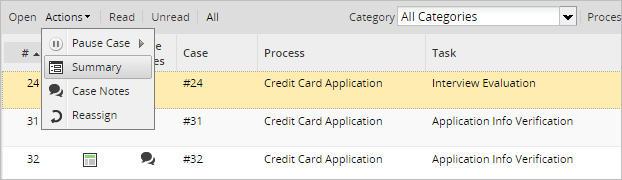
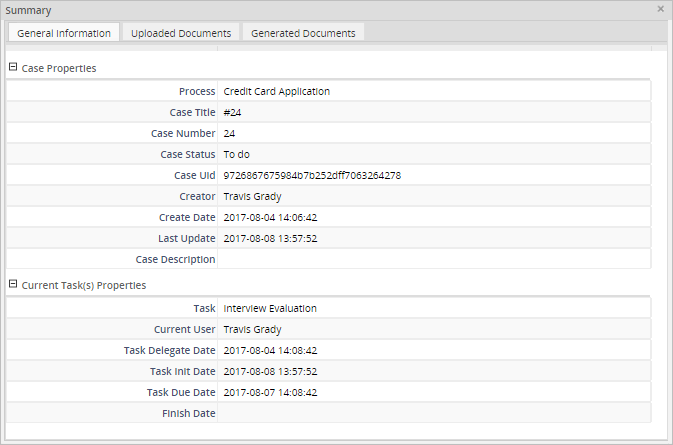
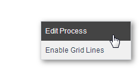
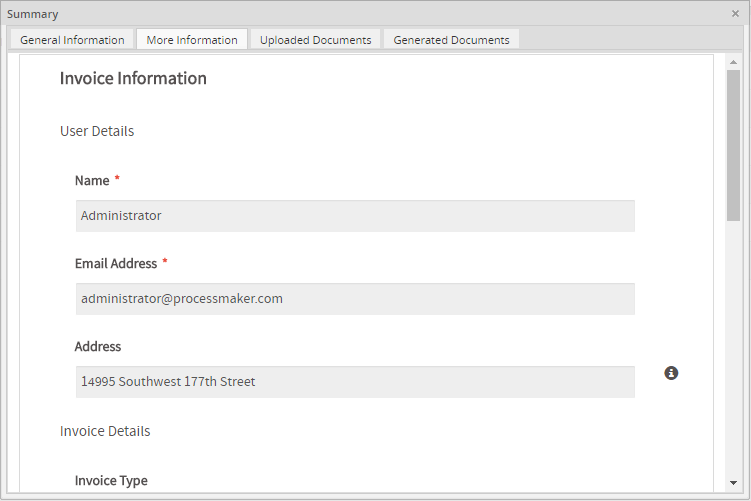

Overview
Note: As of ProcessMaker 3.6.0, check Case Details instead.
The Case Summary shows generic information about the state of a case, such as when the case was started, last updated and who is currently assigned to work on the case. In addition, the user can create a Dynaform that only displays pertinent information about the case and set this custom Dynaform to be shown instead of the general information when a user opens the case using the Jump to option or a case link
The Case Summary is shown when users click the Summary button in the Cases list or select the Summary option in the Actions menu when a case is selected. It is also shown to users who open a case to which they aren't assigned, but have been granted the process permissions to access a Case Summary tab.
Viewing the Case Summary
There are two ways to view the summary of a case:
Go to the Home panel and open a folder in the Cases list, then select a case and click on the icon under the Summary column.

If the Summary column does not is appear in the list, click on the black down arrow that appears when hovering the mouse cursor on the headers of the list, go to Columns and check the option Summary, as shown in the image below.

Select a case from the case list, click on the Actions menu, and select the Summary option.

The Case Summary will be displayed in a separate window.

The Case Summary window contains the following tabs:
General Information
The General Information tab displays a brief description of the case that includes the case and current task(s) properties. Each one of these sections can be expanded or collapsed by clicking on the + and - buttons.
Case Properties
- Process: The name of the case's process.
- Case Title: The title of the case, which by default is the case number preceded by # (the pound sign). The Case Title can be customized in the properties of each task of a process.
- Case Number: The number of the case.
- Case Status: The status of the case, which can be To Do, Draft, Paused, Cancelled, Unassigned and Completed.
- Case UID: The unique ID of the case, which is a 32 hexadecimal number used internally by ProcessMaker to identify the case.
- Creator: The first and last name of the user who created the case.
- Create Date: The date and time when the case was created.
- Last Update: The date and time when the case was last updated.
Current Task(s) Properties
- Task: The name of the current task of the case.
- Current User: The first and last name of the user who is currently assigned to work on the case.
- Task Delegation Date: The date and time when the case was routed to the current task.
- Task Init Date: The date and time when the current task in the case was first worked on. If blank, then the current task hasn't been opened yet.
- Task Due Date: The date and time when the current task is scheduled to be completed. If this date has already passed, then the case is considered overdue.
- Finish Date: The date and time when the current task was completed.
Uploaded Documents
The Uploaded Documents tab displays the list of files that were uploaded to the case as input documents or using a file or multiple file control in a Dynaform.
Remember that the list of files in the Uploaded Documents tab is only displayed if the user logged in is the user currently assigned to the case. For other users, it is necessary to grant an Input Document permission to access the content of this tab.

- Filename: The name of the input document or the file uploaded during the case.
- Comments: Comments that were added to an uploaded input document.
- Type: The type of the document, which can be "Input" if the document was attached to an input document, or "Attached" if the document was uploaded using a file or multiple file control.
- Version: The version of the document. This option is only used if the document was attached to an input document.
- Origin Task: The name of the task where the file was uploaded.
- Created by: Name of the user who uploaded the file.
- Created day: Date and time when the file was uploaded.
Each one of these files can be downloaded by checking the box next to the file name and clicking on the Download button. Note that it is only possible to download one file at a time.

Generated Documents
The Generated Documents tab displays the list of output documents that have been generated during the case. These files can be downloaded in PDF or DOC format, depending on the configuration of the output document.
The list of output documents is only displayed if the user logged in is the user currently assigned to the case. Other users must have an Output Document permission assigned to access the process's output documents.

- Title: The filename to be generated when an output document is created.
- Output Document: The name of the output document.
- Origin Task: The name of the task where the output document was generated.
- Created By: The name of the user who was assigned to the case when the output document was generated.
- Created Date: The date and time when the output document file was generated.
To download a file, check the box next to its title and click on the Download button with the Word icon to download the file in .DOC format, or click the Download button with the Adobe icon to download it in .PDF format.
More Information
Note: Only available in the Enterprise Edition.
The More Information tab displays a Dynaform created only to display additional information about the case, which is useful if information filled in a field or generated by a case variable needs to be displayed to users. By default, users do not have access to the More Information tab, so a Summary Form permission has to be granted to the user.
Create a Dynaform with the fields whose data will be displayed in the summary. Since the data in the Dynaform is read-only and can not be changed, it is NOT necessary to include a Submit or Reset button in the Dynaform.
After the Dynaform is created, set it to be displayed in the case summary by right clicking on the process map and selecting Edit Process from the dropdown menu.

In the Edit process window, go to the Dynaform to show a Case Summary option and select the Dynaform that was created to be displayed in the case summary.

Assign the Summary Form permission to the user or group by hovering the pointer of the mouse over the (+) icon next to the Permissions option in the Process Objects menu, and clicking on the Create button.

In the Create Permission window, select "Summary Form" as the Type of the permission and define the other properties according to your preferences. To read more about the other options of the permission, read this section.

Once the user has the Summary Form permission assigned, he/she will be able to see the selected Dynaform in the More Information tab, which is to the right of the General Information tab.

If the user doesn't have the Summary Form permission and tries to access the More Information tab, the following message will be displayed:

Viewing the Custom Dynaform when Opening a Case
When a user opens a case using the Jump To option or using a case link, the information shown the General Information tab will be displayed, as shown in the image below.

But if the configuration to show the More Information tab has been set, and a Dynaform has been selected in the Dynaform to show a Case Summary option in the configuration of the process, the selected Dynaform will be displayed instead of the general information.

In ProcessMaker 3.2, the Dynaform selected in the Dynaform to show a Case Summary option was only displayed in cases with a TO DO status. As of ProcessMaker 3.2.1, this Dynaform will be displayed in cases with TO DO, DRAFT, PAUSED, CANCELLED, UNASSIGNED and COMPLETED status.